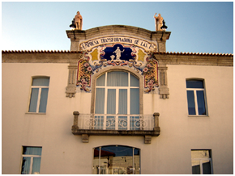

Alunos de Design Industrial projetam garrafa
Na cadeira de Projeto, estão a ser desenvolvidas ideias para garrafas que vão concorrer ao concurso Glassberries, da BA Vidro.
Os alunos da cadeira de Projeto da licenciatura de Design Industrial estão a participar num concurso internacional da empresa BA Vidro, que se destina a seleccionar uma nova garrafa para uma bebida espirituosa. O desafio foi lançado no início do ano e adoptado pelos responsáveis do curso com o objectivo de colocar os alunos perante o contexto real de concepção de um produto. Os responsáveis da empresa estiveram na Universidade da Beira Interior (UBI) na última semana a avaliar tecnicamente os trabalhos, ainda em fase de projecção.
Não é a primeira vez que os alunos da disciplina trabalham de perto com empresas. “Todos os anos temos tido oportunidade de trabalhar com várias empresas. Já colaboramos com a Joalpe e a Fapil”, conta Abílio Silva, director do Curso de Design Industrial e docente do Departamento de Engenharia Eletromecânica.
Este ano surgiu a oportunidade de participar no concurso da vidreira da Marinha Grande intitulado Glassberries, que se estende a três países:
Portugal, Espanha e Polónia. O concurso pretende que os projectos resultem num produto e permitirá ao vencedor estagiar na Barbosa e Almeida.
“Temos um júri internacional que os vai avaliar e posteriormente todos estes trabalhos vão fazer parte do portfólio da BA Vidro. Pretendemos apresenta-los aos nossos clientes, para que as garrafas possam ser produzidas”, explica Ana Pinho, elemento da empresa que na terça-feira, dia 13, esteve na UBI a participar na reunião técnica.
Os alunos estão, assim, a produzir como se fizessem parte de um departamento de uma unidade fabril, “em contacto com o mundo real”, como sublinha Abílio Silva. “Colocamos os estudantes perante as dificuldades que vão experimentar quando estiverem num gabinete de design, a produzir para um cliente. Por outro lado, mostra um pouco aquilo que fazemos com os nossos alunos, para que a empresa conheça o que aqui fazemos em termos de formação de Design Industrial”, conclui o director do curso.
publicado em: quarta-feira, 14 de Maio de 2014